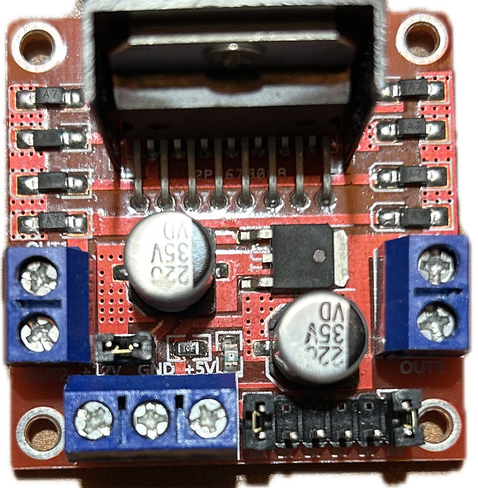

Controlling a DC Motor with the micro:bit
This guide will walk you through controlling a DC motor using your micro:bit and an external power supply. We will cover two common motor driver boards. Choose the tab below that matches the board you are using.
Adafruit-design Motor Shield (L293D)
This blue board is an "Arduino Shield," meaning it's designed to stack perfectly on an Arduino. We can still use it with our micro:bit, but it requires more careful wiring because it uses a special chip (a 74HC595 Shift Register) to control the motors.

1. Hardware Setup & Wiring
Follow these steps carefully. Incorrect wiring is the most common reason for this shield not working.
- Remove the Power Jumper: Find the small plastic jumper next to the blue motor power terminal. Pull it off and put it somewhere safe. This separates the motor power from the logic power.
- Connect Motor Power: Use the blue screw terminal labeled `power`. Connect your external power supply (wall wart or battery pack) here.
- Positive (+) wire to the `+` terminal.
- Negative (-) / Ground wire to the `GND` terminal.
- Connect Logic Power & Control Wires: This is the tricky part! You need to connect seven wires from your micro:bit (via an expansion board) to the header pins on the shield.
Wiring Table: micro:bit to Adafruit Shield
| From (micro:bit) | Pin | Connects To | To (Adafruit Shield) | Pin | Purpose |
|---|---|---|---|---|---|
| micro:bit | GND | → | Adafruit Shield | GND (in power block) | Common Ground (Essential!) |
| micro:bit | 3V | → | Adafruit Shield | 5v (in power block) | Logic Power for the shield's chips |
| micro:bit | Pin 1 | → | Adafruit Shield | Digital I/O Pin 11 | Motor 1 Speed (PWM) |
| micro:bit | Pin 8 | → | Adafruit Shield | Digital I/O Pin 8 | Shift Register Data |
| micro:bit | Pin 12 | → | Adafruit Shield | Digital I/O Pin 12 | Shift Register Latch |
| micro:bit | Pin 13 | → | Adafruit Shield | Digital I/O Pin 4 | Shift Register Clock |
| micro:bit | Pin 14 | → | Adafruit Shield | Digital I/O Pin 7 | Motor Enable |
Wiring Table: Power & Motor
| Component | Terminal | Connects To | Component | Terminal |
|---|---|---|---|---|
| External Power Supply | Positive (+) | → | Adafruit Shield | '+' on Power Screw Terminal |
| External Power Supply | Negative (-) | → | Adafruit Shield | 'GND' on Power Screw Terminal |
| DC Motor | Wire 1 | → | Adafruit Shield | One of the 'M1' terminals |
| DC Motor | Wire 2 | → | Adafruit Shield | The other 'M1' terminal |
2. The Code
This code is more complex because it has to communicate with the shift register chip. Copy and paste this entire script into Mu Editor.
# MicroPython script for micro:bit with an Adafruit-style Motor Shield (L293D)
from microbit import *
# --- PIN DEFINITIONS for Adafruit Shield ---
MOTOR_M1_PWM = pin1 # Speed control for Motor 1
MOTOR_DATA = pin8 # Data pin for the shift register
MOTOR_LATCH = pin12 # Latch pin for the shift register
MOTOR_CLK = pin13 # Clock pin for the shift register
MOTOR_ENABLE = pin14 # Master enable for all motors
# --- LOW-LEVEL SHIFT REGISTER VARIABLES & FUNCTIONS ---
# These bits control the direction pins for motor M1 on the shield
M1_A = 2
M1_B = 3
# This variable stores the 8-bit state we want to send to the shift register
latch_state = 0
def update_latch():
"""Sends the current latch_state byte to the 74HC595 shift register."""
MOTOR_LATCH.write_digital(0)
MOTOR_DATA.write_digital(0)
# Send the 8 bits one by one
for i in range(8):
MOTOR_CLK.write_digital(0)
# Get the next bit to send (from left to right)
bit = (latch_state >> (7 - i)) & 1
MOTOR_DATA.write_digital(bit)
MOTOR_CLK.write_digital(1)
# Latch the data to make it appear on the output pins
MOTOR_LATCH.write_digital(1)
def set_pin(pin, value):
"""Sets a 'virtual' pin on the shift register high (1) or low (0)."""
global latch_state
if value == 1:
latch_state |= (1 << pin) # Set the bit
else:
latch_state &= ~(1 << pin) # Clear the bit
update_latch() # Send the new state to the shield
# --- MOTOR CONTROL FUNCTION LIBRARY ---
def motor_setup():
"""Initializes the pins for the motor shield."""
MOTOR_M1_PWM.write_analog(0)
# IMPORTANT: The MOTOR_ENABLE pin must be LOW to turn the drivers ON.
# It's an "active-low" pin.
MOTOR_ENABLE.write_digital(0)
update_latch()
def motor_stop():
"""Stops Motor M1 by setting both direction pins to low."""
set_pin(M1_A, 0)
set_pin(M1_B, 0)
MOTOR_M1_PWM.write_analog(0)
def motor_forward(power):
"""Runs Motor M1 forward at a specified power level (0-1023)."""
if 0 <= power <= 1023:
set_pin(M1_A, 1) # Set direction pin A high
set_pin(M1_B, 0) # Set direction pin B low
MOTOR_M1_PWM.write_analog(power) # Set the speed
else:
motor_stop()
def motor_backward(power):
"""Runs Motor M1 backward at a specified power level (0-1023)."""
if 0 <= power <= 1023:
set_pin(M1_A, 0) # Set direction pin A low
set_pin(M1_B, 1) # Set direction pin B high
MOTOR_M1_PWM.write_analog(power) # Set the speed
else:
motor_stop()
# --- MAIN PROGRAM ---
motor_setup()
print("Starting motor sequence. Press button A.")
display.show("A")
while True:
if button_a.is_pressed():
# Step 1: Full speed forward for 2 seconds
print("Motor forward at full power...")
display.show(Image.ARROW_N)
motor_forward(1023)
sleep(2000)
motor_stop()
# Step 2: Wait for 1 second
sleep(1000)
# Step 3: Half speed backward for 3 seconds
print("Motor backward at half power...")
display.show(Image.ARROW_S)
motor_backward(512)
sleep(3000)
motor_stop()
# Step 4: Wait for 1 second
sleep(1000)
print("Sequence complete. Press A to run again.")
display.show("A")
3. How to Run
- Connect your micro:bit to your computer.
- Open Mu Editor.
- Copy the code above and paste it into a new file in Mu.
- Click the "Flash" button to send the code to your micro:bit.
- Plug in your external power supply for the motors.
- The micro:bit display should show the letter "A". Press button A on the micro:bit to start the motor sequence!
4. Troubleshooting
- Motor doesn't move at all?
- Check the common ground wire between the micro:bit and the shield. This is the #1 most common problem!
- Is the external motor power supply turned on?
- Did you remove the power jumper? If it's still on, it won't work.
- Carefully double-check all 7 of the control and power wires from the micro:bit to the shield. It's very easy to get one in the wrong spot.
- Motor only hums or twitches?
- Your external power supply might not be providing enough voltage or current. Check that it is between 6V and 12V.
- The micro:bit outputs 3.3V signals, but this shield was designed for 5V signals. Usually it works, but sometimes it can be unreliable.
L298N Motor Driver (Red Board)
This red board is a very common and simple motor driver. It uses an L298N "H-Bridge" chip, which acts like a set of electronic switches to control the direction and speed of two DC motors.
1. Hardware Setup & Wiring
This board is simpler to wire than the Adafruit shield. Follow these steps carefully.
- Remove the Speed Control Jumper: Look for a small plastic jumper on the 3 pins labeled `ENA` (or sometimes `5V_EN`). Pull it off and put it somewhere safe. This allows our micro:bit to control the motor speed.
- Connect Motor Power: Use the blue screw terminal on the left. Connect your external power supply (wall wart or battery pack) here.
- Positive (+) wire to the `+12V` terminal.
- Negative (-) / Ground wire to the `GND` terminal.
- Connect the micro:bit and Motor: Now, connect the control wires from your micro:bit and the motor wires to the board.
Wiring Table: micro:bit, Power, and Motor to L298N
| From | Pin / Terminal | Connects To | To (L298N) | Pin / Terminal | Purpose |
|---|---|---|---|---|---|
| micro:bit | GND | → | L298N Board | GND (Power Terminal) | Common Ground (Essential!) |
| micro:bit | Pin 0 | → | L298N Board | IN1 | Direction Control 1 |
| micro:bit | Pin 1 | → | L298N Board | IN2 | Direction Control 2 |
| micro:bit | Pin 2 | → | L298N Board | ENA | Speed Control (PWM) |
| External Power Supply | Positive (+) | → | L298N Board | +12V | Motor Power Input |
| External Power Supply | Negative (-) | → | L298N Board | GND | Motor Power Ground |
| DC Motor | Wire 1 | → | L298N Board | OUT1 | Motor A Output |
| DC Motor | Wire 2 | → | L298N Board | OUT2 | Motor A Output |
Note: If your motor spins in the wrong direction, just swap the `OUT1` and `OUT2` wires.
2. The Code
This code is much simpler because we are directly controlling the pins on the L298N. Copy and paste this entire script into Mu Editor.
# MicroPython script for micro:bit with an L298N Motor Driver
from microbit import *
# --- PIN DEFINITIONS for L298N ---
# Pin 2 will control speed using Pulse-Width Modulation (PWM)
MOTOR_SPEED_PIN = pin2
# Pins 0 and 1 will control the direction
MOTOR_DIRECTION_PIN_1 = pin0
MOTOR_DIRECTION_PIN_2 = pin1
# --- MOTOR CONTROL FUNCTION LIBRARY ---
def motor_forward(power):
"""
Spins the motor forward.
'power' is a value from 0 (off) to 1023 (full speed).
"""
# Set the direction pins for forward motion
MOTOR_DIRECTION_PIN_1.write_digital(1)
MOTOR_DIRECTION_PIN_2.write_digital(0)
# Set the speed
MOTOR_SPEED_PIN.write_analog(power)
def motor_backward(power):
"""
Spins the motor backward.
'power' is a value from 0 (off) to 1023 (full speed).
"""
# Set the direction pins for backward motion
MOTOR_DIRECTION_PIN_1.write_digital(0)
MOTOR_DIRECTION_PIN_2.write_digital(1)
# Set the speed
MOTOR_SPEED_PIN.write_analog(power)
def motor_stop():
"""Stops the motor completely (coast)."""
MOTOR_DIRECTION_PIN_1.write_digital(0)
MOTOR_DIRECTION_PIN_2.write_digital(0)
MOTOR_SPEED_PIN.write_analog(0)
# --- MAIN PROGRAM ---
# This is where you can experiment by calling the functions.
print("Starting motor sequence. Press button A.")
display.show("A")
while True:
if button_a.is_pressed():
# Step 1: Full speed forward for 2 seconds
print("Motor forward at full power...")
display.show(Image.ARROW_N)
motor_forward(1023)
sleep(2000)
motor_stop()
# Step 2: Wait for 1 second
sleep(1000)
# Step 3: Half speed backward for 3 seconds
print("Motor backward at half power...")
display.show(Image.ARROW_S)
motor_backward(512)
sleep(3000)
motor_stop()
# Step 4: Wait for 1 second
sleep(1000)
print("Sequence complete. Press A to run again.")
display.show("A")
3. How to Run
- Connect your micro:bit to your computer.
- Open Mu Editor.
- Copy the code above and paste it into a new file in Mu.
- Click the "Flash" button to send the code to your micro:bit.
- Plug in your external power supply for the motors.
- The micro:bit display should show the letter "A". Press button A on the micro:bit to start the motor sequence!
4. Troubleshooting
- Motor doesn't move at all?
- Check the common ground wire between the micro:bit's GND pin and the L298N's GND terminal. This is the #1 most common problem!
- Is the external motor power supply turned on?
- Did you remove the ENA jumper? If you left it on, Pin 2 won't be able to control the speed.
- Double-check that your wires are connected to IN1, IN2, and ENA.
- Motor only runs at full speed?
- You probably forgot to remove the ENA jumper!
- Motor only hums or twitches?
- Your external power supply might not be providing enough voltage or current. Make sure it is at least 6V.